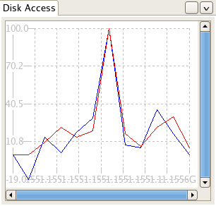

Table of Contents > Getting Started
Dashboard Tutorial
The Dashboard Perspective is the most advanced part of SystemTap GUI. It is designed to allow users to browse
and run prebuilt modules in order to see multiple graphs updating in
sequence.
For this tutorial we'll use one of the prebuilt modules to illustrate the user how the Dashboard perspective
is used. Each module is part of a module family, a collection of related
modules. To start, switch to the Dashboard perspective. On the left you should see a browser titled "Modules".

The Module Browser contains a list of modules available to run. Notice that there is another tab, "Active Modules", in the same pane. The
Active Modules Browser allows you to browse the modules you currently have running. At this point, however, it
will be empty; there are no modules currently running. Open the module family "Hard Disk" by clicking the arrow
next to it's name. This will display each module associated in the "Hard Disk" module family.
We are going to be running the Disk Access module. This can be accomplished two ways. You may select it and
Run->Run Script. You can alternatively click the Run Script button in the Toolbar. SystemTap GUI will request the details of the Remote Server(ip address, username, password),
enter the details to proceed. You should see a display similar to the following:

The Dashboard shows three graphs, each obtaining data from one script, each analyzing different components of disk access - bytes read,
bytes written, and a multi-line graph illustrating both.

Each graph comes with graph-specific options:
 - Expand Graph - This option opens a set of graph-unique options:
- Expand Graph - This option opens a set of graph-unique options:
- Zoom - This option allows the user to increase and decrease the no of x-axis ticks.
- - Close Zoom bar - This hides the zoom bar.
 - Close Graph - This removes the graph from the viewer pane.
- Close Graph - This removes the graph from the viewer pane.
Take a moment to interact with these options to familiarize yourself with them.

Multiple Module Execution
SystemTap GUI supports the execution of more than one module at one time. The currently running script does not
not to be halted and the currently open graphs do not need to be closed, though they may be if desired. To
execute another module, simply select and run it as described above. If you were to
run a module in the Memory module family for example, a new tab will be opened titled 'Memory' in addition to the
current tab for 'Hard Disk'.
Up to 8 graphs may be open in each tab at any given time. Drag and drop support is included for the graph types, permitting
re-arrangement for ideal analysis. In addition, Pausing is also implemented in SystemTap GUI. You may pause
any module by selecting Run->Pause Module, or by selecting Pause from the toolbar. Know that this method of
pausing is an illusion; the graph data is simply not updated while the script continues to run. This inability
to truly pause is inherent in SystemTap itself. You can also stop the script using the above methods. This
will halt the running script of that module and remove the graphs entirely from the view pane. It will not affect
graphs or scripts associated with any other modules. If at any time you are unsure of which modules are
currently active you can check this by navigating to the Active
Modules Browser.